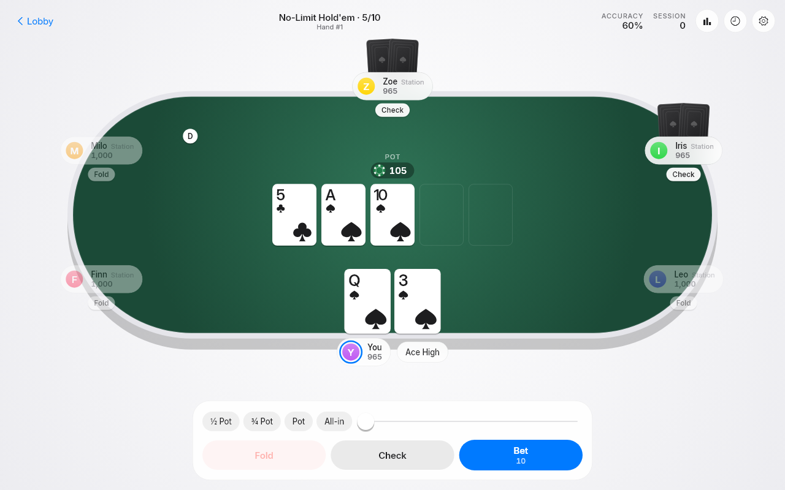
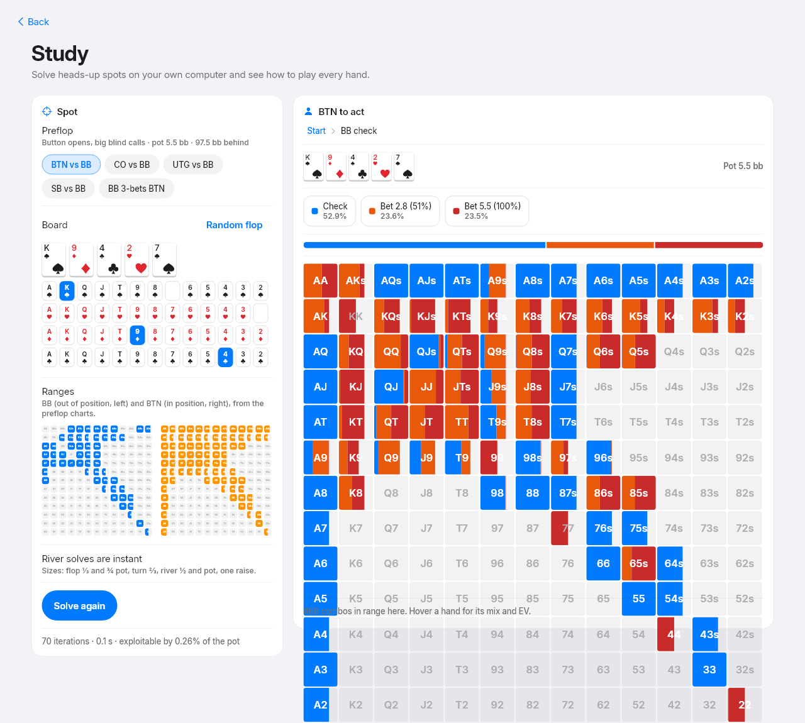
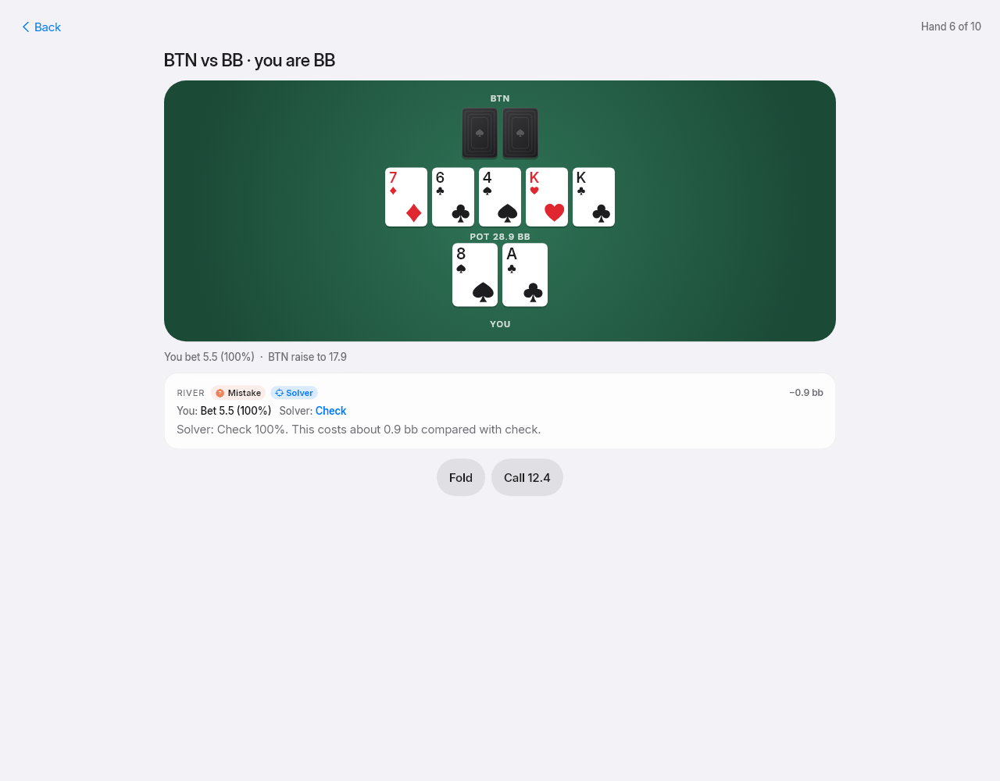
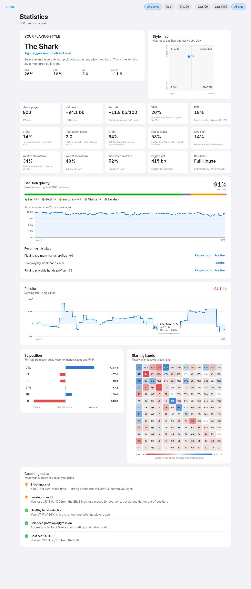
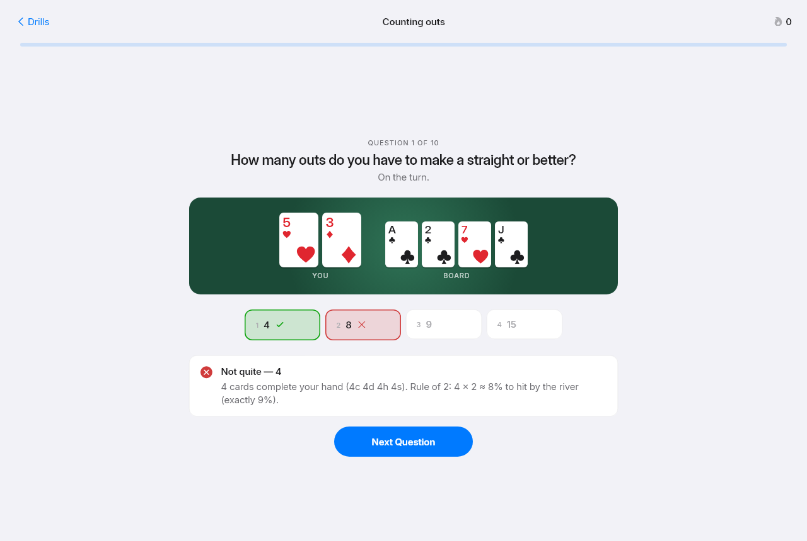
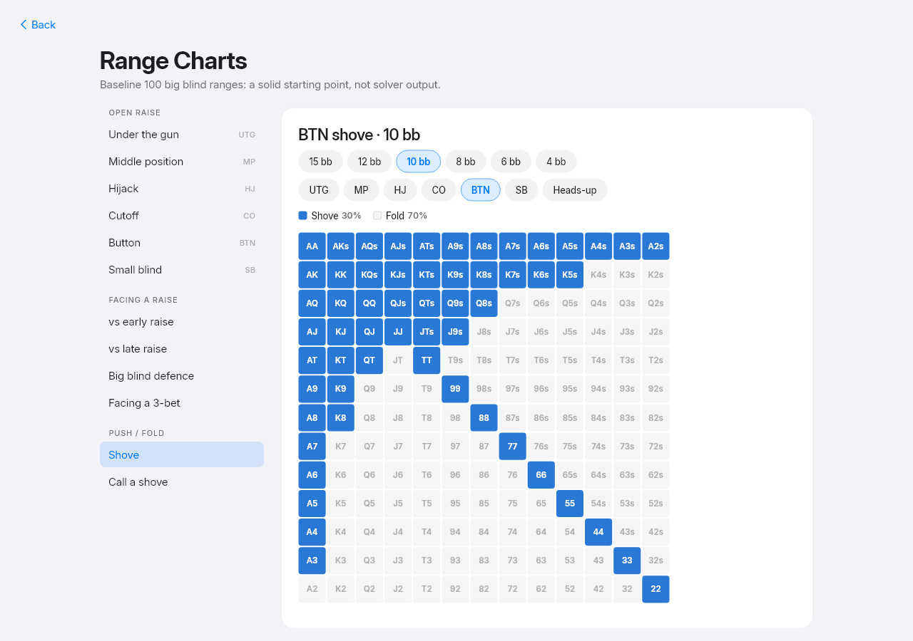
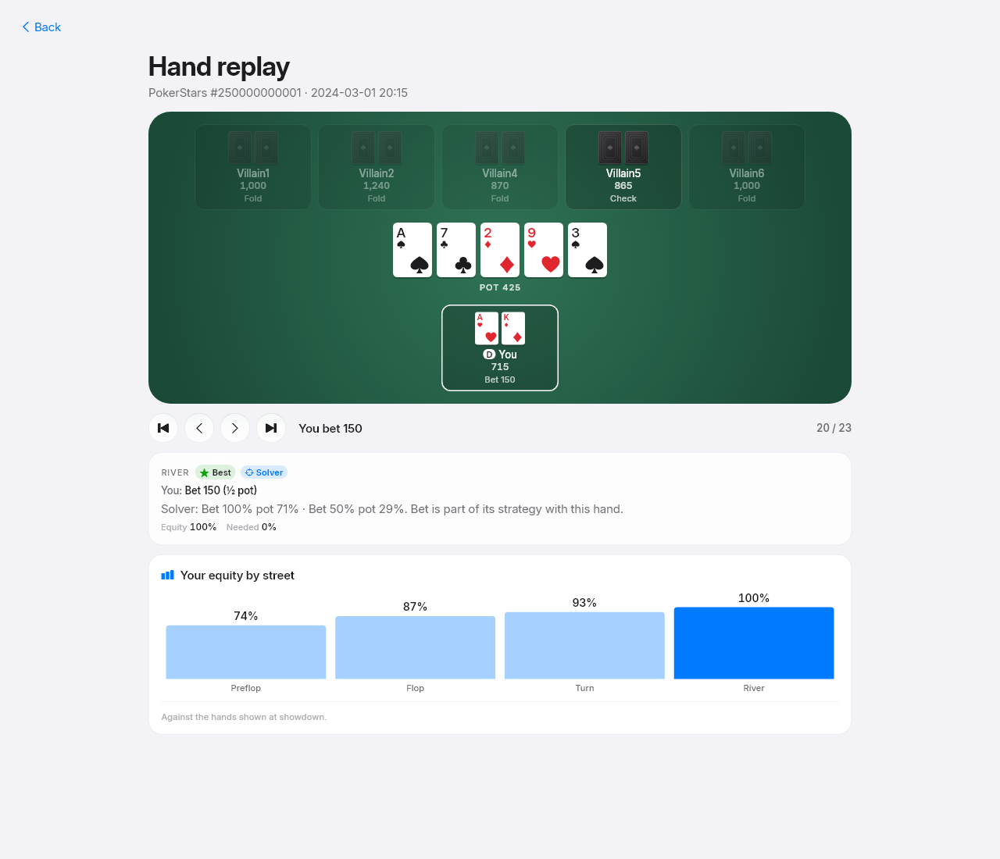
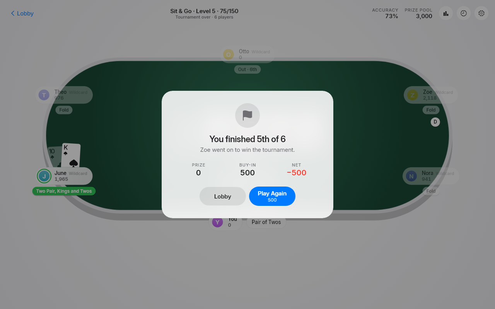

Felt
No-Limit Texas Hold'em against opponents that adapt to you, a coach that grades every decision, and a game-theory solver that runs on your own computer.

Everything at the table
Play. Get graded. Improve.
Felt is built for players who want to get better, not just click through hands.
Rock, Shark, Maverick, Station and Wildcard, at three skill levels.
Graded Best to Blunder, with the reason and the better play.
Solve spots, train against the solver, and test ranges in the Equity Lab.
Stakes from 1/2 to 100/200, or 2–9 player tournaments.
Study
A game-theory solver on your own computer.
Pick a preflop line and any board, and Felt solves the spot. See exactly how often to bet, check, call or raise with every hand, and what each hand is worth. No subscription, no upload, no waiting for a server.
- Fast. Rivers in milliseconds, turns in seconds, flops in about a minute and a half.
- Built into the coach. Heads-up river decisions are graded against an exact solve of the spot you played.
- Equity Lab. Range against range on any board, with a breakdown of made hands and draws.

Spot Trainer
Practise against the solver itself.
Play whole hands from a chosen spot against an opponent who follows the solver's strategy. Every decision is graded by the EV it gives up, and the next spot is solved while you play.

The coach
Know why, not just what.
After every hand, Felt replays your decisions street by street. It estimates your equity against the range your opponent is likely to hold, and tells you what it cost when you strayed.
- Live or after the hand. Hide the grades while you play; they're still recorded for your stats.
- Tournament aware. Push/fold charts at short stacks, and ICM when you face an all-in near the bubble.
You: Raise to 27
KJs is in the baseline raising range from the cutoff.
You: Bet 30 (½ pot)
With about 58% equity against their likely range (top 50%), a half-pot bet was the strongest option.
You: Bet 65 (½ pot)Coach: Check
With about 51% equity, betting mostly gets called by better hands and folds out worse ones.
You: Fold
19% equity when you needed 25%. A disciplined fold.
Statistics
Find out what kind of player you are.
Every hand you play is saved on your computer and turned into the numbers serious players track. Felt reads them back to you in plain words.
- Your playing style. Shark, Rock, Maverick, Calling Station and more, placed on a tight/loose and passive/aggressive map.
- The standard stats. VPIP, PFR, 3-bet, aggression, c-bet, showdown rates and win rate.
- Where you leak. Results by position and by starting hand, recurring mistakes, and coaching notes.

Training
Drills that target your leaks.
Ten-question sessions on counting outs, equity, pot odds, preflop ranges and push/fold. Felt recommends the drill that fixes your most common mistake.

Range charts
Every opening range, one click away.
Baseline 100 big blind ranges for every seat, for facing raises and 3-bets, and push/fold charts from 15 big blinds down to 4.

Your real hands
Bring in the hands you play online.
Import PokerStars and GGPoker hand histories. Felt replays every hand, grades your decisions, and adds them to your statistics.
- Hand replayer. Step through any hand with the coach's comments and your equity on each street.
- Leak finder. Your recurring mistakes, ranked by what they cost per 100 hands, each with a link to the matching drill or trainer.
- Export. Any hands as PokerStars text, for your tracker.

Sit & Go
Buy in. Outlast the table.
Single-table tournaments for 2 to 9 players with rising blinds and antes. Winner takes all, or pay the top places.
- One bankroll. Buy-ins, prizes and cash-game winnings all move the same balance.
- Hyper, Turbo or Regular. Blinds rise every 5, 8 or 12 hands, from 1,000, 1,500 or 3,000 chips.

Under the hood
A real poker engine, not a toy.
Written from scratch in Dart and tested hand by hand.
Distinct hand ranks, checked against all 133 million seven-card hands.
Min-raises, short all-ins, side pots and odd chips, the way a casino deals them.
Driven by the system's secure random generator, with a burn card each street.
A Flutter desktop app. Starts fast, stays light, and plays without an internet connection.
Download
Take a seat.
Free, open source, and yours to keep. Your hands and stats never leave your computer.
Windows
Windows 10 or 11, 64-bit. The installer adds Felt to the Start menu, needs no admin rights, and Felt keeps itself up to date.
Felt isn't code-signed yet, so Windows may show “Windows protected your PC”. Choose More info → Run anyway.
Download Felt for WindowsLinux
Build it with Flutter. You'll need clang cmake ninja-build pkg-config libgtk-3-dev.
git clone https://github.com/mje07/felt cd felt flutter build linux --releaseBuild instructions